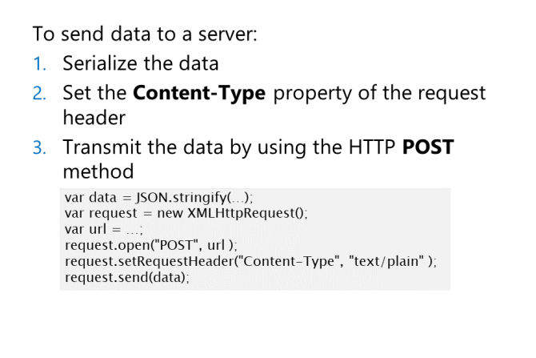

Korzystanie z obiektu XMLHttpRequest w celu uzyskania dostępu do danych zdalnych
Obiekt XMLHttpRequest zapewnia dostęp do dowolnego rodzaju danych zdalnych;
nie jest ograniczonydo danych dla elementów, które zapewniają atrybut src. Częstym zastosowaniem jest wywoływanie usługi internetowej, przekazywanie jej danych
wpisanych przez użytkownika w formularzu, a następnie przetworzone zwrócone odpowiedzi.
const request = new XMLHttpRequest();
Następnie możesz użyć tego obiektu do zainicjowania zdalnego żądania. Aby to zrobić, ustaw właściwości określające
URL zdalnych danych, które określają typ danych w żądaniu;
const url = "http://contoso.com/resources/...";
request.open( "GET", url );
Metoda open() definiuje metodę HTTP i adres URL tego żądania. Metodę HTTP można ustawić na:
GET, aby zażądać znanego zasobu bez parametrów podczas korzystania
POST, aby wysłać sparametryzowane dane do serwera, najczęściej tworzą dane, które zostaną przeanalizowane jako część żądania.
HEAD określa, że odpowiedź powinna być tylko informacją nagłówka i może być przydatna na przykład, aby uzyskać podsumowanie dużego zasobu przed jego pobraniem.
Aby przesłać żądanie, wywołaj metodę send().
Wywołania metody send() są domyślnie asynchroniczne, co oznacza, że kod JavaScript nie będzie blokowany
w czasie czekania na odpowiedź. Jeśli potrzebujesz odpowiedzi przed kontynuowaniem, użyj opcjonalnego trzeciego argumentu metody open():
request.open(method, url, false);
Powinieneś sprawdzić wynik send()
tworząc funkcje do sprawdzenia, czy żądanie
zostało wysłane. Aby to zrobić, sprawdź status
właściwość obiektu żądania. Ta właściwość
zawiera kod statusu HTTP wysyłanej
operacji. Kod stanu 200 oznacza sukces;
inne kody wskazują na jakiś błąd lub
ostrzeżenie. Na przykład kod stanu 404
wskazuje, że żądanego zasobu
nie można znaleźć. Właściwość statusText zapewnia
więcej informacji w formie tekstowej.
Powinieneś zawinąć kod JavaScript w try… catch block, aby obsłużyć wszelkie inne nieoczekiwane wyjątki
spowodowane awarią sieci lub komunikacji w przeglądarce.
Odpowiedzi serwera
Właściwość responseText może być dowolnym tekstem
sformatowanym czy nie. To znaczy że
serwer może zwrócić dane w formacie HTML, JSON,
XML, CSV, format ciągu zapytania lub po prostu zwykły tekst.
Możesz użyć funkcji getResponseHeader()
w celu ustalenia rodzaju danych
w odpowiedzi.
Typ zwracanych danych jest określony w odpowiedzi na nagłówek Content-Type
Jeśli odpowiedzią są dane XML, możesz użyć
właściwość responseXML, aby pobrać poprawnie sformułowaną odpowiedź XML.
Przyklad JSON

Obsługa odpowiedzi asynchronicznej
XMLHttpRequest
udostępnia zdarzenie readystatechange, którego
możesz użyć do wykrycia, czy dane zostały
zwrócone.
XMLHttpRequest ma właściwość readyState
, która może mieć jedną z następujących
wartości:
-
0: Obiekt XMLHttpRequest ma
nie został otwarty.
1: Obiekt XMLHttpRequest został otwarty.
-
2: Obiekt XMLHttpRequest wysłał żądanie.
3: Obiekt XMLHttpRequest zaczął otrzymywać odpowiedź.
4: Obiekt XMLHttpRequest zakończył odbieranie odpowiedzi.
Przesyłanie danych z żądaniem

Żądania HTTP GET zwracają dane do przeglądarki
z serwera. Możesz także użyć HTTP POST
przesłania danych z przeglądarki na
serwer. Aby przesłać żądanie zawierające dane,
określ metodę POST zamiast GET jako
parametr funkcji open(). Wywołanie send()
działa jak poprzednio, ale musi być podany
parametr.
może to byc dowolnym ciąg tekstowy, który metoda sieciowa serwera może
analizować.
Powinieneś także określić format danych, aby upewnić się, że jest on poprawnie interpretowany przez serwer.
request.setRequestHeader("Content-Type", "application/json");
Dla danych wprowadzonych przez użytkownika w formularzu HTML5
request.setRequestHeader("Content-Type", "application/x-www-form-urlencoded");